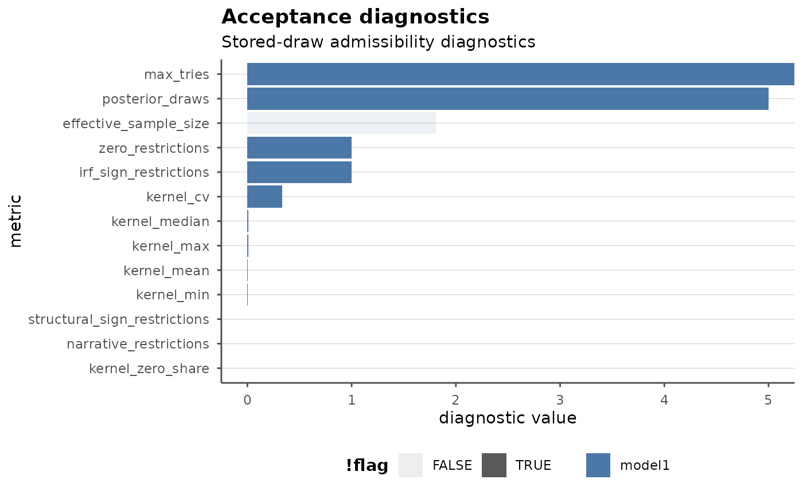

Post-Estimation Workflows in bsvarPost
Source:vignettes/post-estimation-workflows.Rmd
post-estimation-workflows.RmdThis vignette focuses on the broader analytical surface of
bsvarPost after a model has already been estimated with
bsvars or bsvarSIGNs.
The emphasis is not on estimation itself, but on:
- representative-model summaries
- posterior hypothesis and restriction auditing
- event-window historical decomposition workflows
- response timing summaries
- diagnostics for sign-restricted models
- plot styling and publication-oriented outputs
Most chunks are shown as workflow templates rather than evaluated during the build. A small evaluated showcase is included at the end so the rendered document still contains a real table and plot.
Representative-model summaries
For sign-restricted analysis, pointwise posterior medians need not
correspond to one coherent draw. bsvarPost therefore offers
representative-model summaries.
library(bsvarSIGNs)
library(bsvarPost)
data(optimism)
sign_irf <- matrix(c(0, 1, rep(NA, 23)), 5, 5)
spec <- specify_bsvarSIGN$new(
optimism * 100,
p = 4,
sign_irf = sign_irf
)
post <- estimate(spec, S = 100, thin = 1, show_progress = FALSE)
spec_alt <- specify_bsvarSIGN$new(
optimism * 100,
p = 2,
sign_irf = sign_irf
)
post_alt <- estimate(spec_alt, S = 100, thin = 1, show_progress = FALSE)
rep_median <- median_target_irf(post, horizon = 12)
rep_mla <- most_likely_admissible_irf(post, horizon = 12)
summary(rep_median)
summary(rep_mla)
plot(rep_median)Use median_target_*() when you want the stored draw
closest to the posterior center. Use
most_likely_admissible_*() when you want the stored
admissible draw with the highest reconstructed admissibility score.
Posterior hypotheses and audits
Posterior probability statements can be evaluated directly on IRFs or CDMs.
hypothesis_irf(
post,
variable = 1,
shock = 1,
horizon = 0:2,
relation = ">",
value = 0
)
joint_hypothesis_irf(
post,
variable = 1,
shock = 1,
horizon = 0:2,
relation = ">",
value = 0
)
simultaneous_irf(
post,
horizon = 12,
variable = 1,
shock = 1
)Restriction and magnitude audits are explicit post-estimation summaries. They do not modify the estimation problem.
restriction_audit(post)
magnitude_audit(
post,
type = "irf",
variable = 2,
shock = 1,
horizon = 0,
relation = ">",
value = 0
)Historical decomposition workflows
For event studies, aggregate historical decomposition contributions over a window and then rank shocks by contribution size.
hd_event <- tidy_hd_event(post, start = 1, end = 4)
hd_event
ranked <- shock_ranking(post, start = 1, end = 4, ranking = "absolute")
rankedCompare event windows across models:
compare_hd_event(p1 = post, p2 = post_alt, start = 1, end = 4)Plot the resulting summaries:
plot_hd_event(post, start = 1, end = 4)
plot_shock_ranking(post, start = 1, end = 4, ranking = "absolute", top_n = 5)Response timing summaries
bsvarPost includes timing summaries that applied users
often compute manually for papers and presentations.
peak_response(post, type = "irf", horizon = 12, variable = 1, shock = 1)
duration_response(
post,
type = "cdm",
horizon = 12,
variable = 1,
shock = 1,
relation = ">",
value = 0,
mode = "total"
)
half_life_response(
post,
type = "irf",
horizon = 12,
variable = 1,
shock = 1,
baseline = "peak"
)
time_to_threshold(
post,
type = "cdm",
horizon = 12,
variable = 1,
shock = 1,
relation = ">",
value = 0
)The same summaries can be compared across alternative specifications.
compare_peak_response(p1 = post, p2 = post_alt, type = "irf", horizon = 12, variable = 1, shock = 1)
compare_duration_response(p1 = post, p2 = post_alt, type = "cdm", horizon = 12, variable = 1, shock = 1, relation = ">", value = 0)
compare_half_life_response(p1 = post, p2 = post_alt, type = "irf", horizon = 12, variable = 1, shock = 1)
compare_time_to_threshold(p1 = post, p2 = post_alt, type = "cdm", horizon = 12, variable = 1, shock = 1, relation = ">", value = 0)
as_kable(compare_peak_response(
p1 = post,
p2 = post_alt,
type = "irf",
horizon = 12,
variable = 1,
shock = 1
), preset = "compact")Diagnostics for sign-restricted models
acceptance_diagnostics() provides a stored-draw
diagnostics layer for PosteriorBSVARSIGN objects.
diag_tbl <- acceptance_diagnostics(post)
diag_tbl
summary(diag_tbl)Compare diagnostics across models:
compare_acceptance_diagnostics(p1 = post, p2 = post_alt)
plot_acceptance_diagnostics(diag_tbl, metrics = c("effective_sample_size", "kernel_zero_share"))
as_kable(report_bundle(diag_tbl, preset = "compact"))These are not full proposal acceptance histories. They are summaries of what is recoverable from the stored posterior draws and identification state.
Plot styling and templates
All ggplot2 outputs returned by bsvarPost
can be restyled downstream.
irf_tbl <- tidy_irf(post, horizon = 12)
p <- ggplot2::autoplot(irf_tbl)
style_bsvar_plot(
p,
preset = "paper",
palette = c("#1b9e77", "#d95f02")
)
template_bsvar_plot(
p,
family = "irf",
preset = "paper"
)
annotate_bsvar_plot(
p,
title = "Impulse responses",
xintercept = 2
)
publish_bsvar_plot(diag_tbl, preset = "slides")This plotting layer is intended to reduce the amount of manual figure code needed to bring posterior outputs into publication-ready form.
Rendered showcase
library(bsvarSIGNs)
#> Loading required package: RcppArmadillo
#> Loading required package: bsvars
library(bsvarPost)
data(optimism)
sign_irf_demo <- matrix(c(0, 1, rep(NA, 23)), 5, 5)
set.seed(12)
demo_spec <- specify_bsvarSIGN$new(
optimism * 100,
p = 2,
sign_irf = sign_irf_demo
)
demo_post <- estimate(demo_spec, S = 5, thin = 1, show_progress = FALSE)
demo_diag <- acceptance_diagnostics(demo_post)
#> Argument standardise is forcibly set to FALSE due to zero restrictions imposed on the diagonal element(s) of the on-impact impulse response matrix.
as_kable(report_bundle(demo_diag, preset = "compact"))| Model | Value |
|---|---|
| model1 | 5.0000000 |
| model1 | 1.8101543 |
| model1 | Inf |
| model1 | 1.0000000 |
| model1 | 1.0000000 |
| model1 | 0.0000000 |
| model1 | 0.0000000 |
| model1 | 0.0053186 |
| model1 | 0.0066128 |
| model1 | 0.0033773 |
| model1 | 0.0066128 |
| model1 | 0.0000000 |
| model1 | 0.3332004 |
publish_bsvar_plot(demo_diag, preset = "paper")
#> Warning: Using alpha for a discrete variable is not advised.